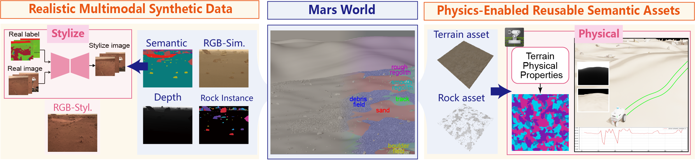
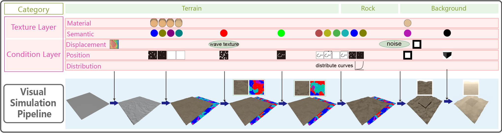
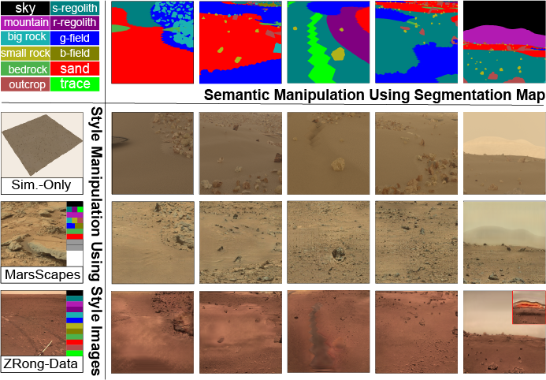

VMR-Team
VMR-Team
VMR-Team
VMR-Team
Abstract
The rapid development of deep learning has driven advances in planetary exploration, and its performance often relies on large-scale and high-fidelity training data. However, the high cost of acquiring real Martian surface data makes synthetic data a practical alternative for alleviating data scarcity and enabling multimodal alignment. Existing synthetic Martian datasets commonly rely on 3D reconstruction from real observations or manually designed virtual environments, which are respectively constrained by reconstruction quality and synthetic-to-real domain gaps. To address these limitations, we propose a procedural data generation framework for generating learning-oriented, multimodal Martian simulation data with domain-adaptive visual rendering. For visual data generation, We incorporates SPADE-Mars for synthetic-to-real scene transformation. Experimental results demonstrate that SPADE-Mars can reduce the domain gap and adapt to diverse Martian rover visual styles. The domain-adapted synthetic data achieving 88.97% of the real-data baseline and synthetic-real fusion surpassing the baseline by 3.59%. To fully exploit the constructed scenes and leverage the task-specific capabilities of different simulation environments, the outputs semantically defined scene entities as reusable assets, enabling downstream tasks to be decoupled across different simulation environments. An interface to Isaac Sim is further provided to demonstrate their reuse as physics-enabled assets.
Framework

The proposed framework for generating realistic multimodel synthetic data and physically grounded terrain assets.
Pipeline

Overview of the proposed procedural Martian scene generation pipeline.Experiment

Performance comparison of different path planning algorithms on our procedurally generated Mars terrain scenes.
Demo 1
Algorithm comparison: front view and top‑down trajectory visualization
Demo 2
Full navigation demo video with corresponding keyframe images